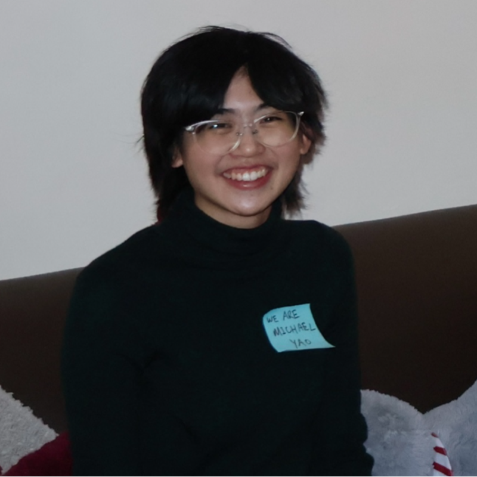

Calista Oetama
Hello! I’m a journalist and a senior at Yale double-majoring in History and English. Previously, I produced data-driven stories with the Connecticut Mirror, covered policy and culture for the Sacramento Bee, and served as co-editor-in-chief of The New Journal. I’m committed to learning from people on the ground and putting their experiences in conversation with data and policy.

CT’s first state-funded methadone vans expand access to treatment
The Connecticut Mirror • August 16, 2026The mobile units aim to reach clients in Connecticut’s rural corners and destigmatize the use of methadone to fight opioid use disorder.

More than 17% of CT residents live in a ‘pharmacy desert’
The Connecticut Mirror • July 31, 2026The owners of Durham Pharmacy, the only one in town, say community support keeps them afloat amid rising independent pharmacy closures.

It’s a bird! It’s a plane! It’s a very expensive collision!
The Connecticut Mirror • July 21, 2026After one of Connecticut’s most expensive airplane vs. bird strikes, Danbury Municipal Airport’s team works to ensure it doesn’t happen again.

More CT residents are taking testosterone
The Connecticut Mirror • July 10, 2026Androgen prescriptions in CT have increased by 63% since 2023 — and endocrinologists say most are going to men.

Voter Guide: Connecticut Primary Election 2026
The Connecticut Mirror • August 2026I produced all maps, wrote answers to the FAQ section and built the page in WordPress. To ensure accuracy, I manually checked all 198 ballots.

CT schools among the most segregated in the U.S.
The Connecticut Mirror • June 23, 2026(With Theo Peck-Suzuki) I performed all data analysis, made all visualizations and wrote the “Interpreting the Numbers” section.

CT once had the largest enslaved population in New England
Connecticut’s enslaved population of 5,098 in 1774 was larger than any other New England colony before the Revolutionary War.

Homelessness in Connecticut rises again, but at a lower rate
(With Ginny Monk) I led the story, writing most of the text and producing visualizations.
.jpg)
New ways of saving California salmon emphasize unexpected collaboration
The Sacramento Bee • August 6, 2025Water politics and new stressors to salmon have brought together an unlikely coalition of anglers, farmers and researchers.
UC Davis scientists could use AI to help Northern California tomato farmers
The Sacramento Bee • August 8, 2025The method may provide a more sustainable solution for tomato farmers who typically fight disease and blight with pesticides.
Nurses, Rocklin residents protest Medicaid cuts at Rep. Kevin Kiley’s office
The Sacramento Bee • July 1, 2025Dozens of residents rallied against proposed Medicaid cuts under Congress’ spending cuts and tax breaks bill.

LGBTQ+ community thrives in tiny Placerville club
The Sacramento Bee • July 3, 2025Karaoke, board games and the pleasure of conversation offer respite for LGBTQ+ individuals in a rural town that leans purple-red.

Sacramento-area college is home to California’s only on-campus mortuary
Sacramento Bee • June 24, 2025What appears to be an ordinary funeral chapel is actually a wing of the Career Technical Education Building at American River College.

Sacramento adopts ambitious Urban Forest Plan
The Sacramento Bee • June 25, 2025Residents argued that the plan will increase equity through canopy expansion.

Growing Memory
The New Journal • September 20, 2024The first of its kind, a garden in New Haven remembers local victims of gun violence.

PODCAST: Methadone access expands in CT
WSHU/NPR • August 17, 2026Enterprise reporting featured on WSHU/NPR’s “Long Story Short” podcast.
Mark of Excellence Awards (National)
Society of Professional Journalists • May 2026Co-reported and rigorously edited a story awarded Best Data Visualization.
Mark of Excellence Awards (Northeast)
Society of Professional Journalists • April 2026(As editor of The New Journal) First-place prizes in feature-writing, in-depth reporting and data visualization.
Mark of Excellence Awards (Northeast)
Society of Professional Journalists • May 2026(As editor of The New Journal) Named Best Student Magazine.

Yale English Prize Winners
Yale University • April 2024Awarded the J. Edward Meeker First Year English Prize for excellence in nonfiction writing.
I’m currently working on a reported story on testosterone as a mediator for happiness in one’s body; a project about travel restrictions under parole; and a thesis on botanical imperialism in mid-1800s South Africa.
Though journalism is my main gig, I’ve also conducted historical research through Yale’s MacMillan Center and served as a year-long intern at the Yale University Art Gallery, where I produced audio guides and edited catalog essays for an exhibition on the Nguni diaspora. I currently create 3-D models of fossils from Olduvai Gorge as a metadata analyst at the Yale Peabody Museum.
Current occupant of my thoughts: “82 Sentences, Each Taken from the ‘Last Statement’ of a Person Executed by the State of Texas Since 1984” by Joe Kloc.